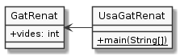

Propietats públiques
Tornem a revisar el codi amb les classes GatRenat i UsaGatRenat. Aquest
cop, afegirem un petit canvi:
A veure si detectes què ha canviat al següent diagrama UML respecte la versió anterior:

Si has mirat amb atenció, hauràs vist que han aparegut dos signes +
acompanyant vides i main().
Fixa't ara com es tradueix el diagrama anterior a codi. Comencem per
GatRenat.
1public class GatRenat {
2 public int vides;
3}
I respecte a UsaGatRenat:
1public class UsaGatRenat {
2 public static void main(String[] args) {
3 GatRenat renat = new GatRenat();
4 System.out.println("Al gat Renat li queden " + renat.vides + " vides");
5 }
6}
A la classe GatRenat veiem que la declaració de l'atribut vides ara ve
precedida per public, que correspon al + que apareix al diagrama.
public és una marca de visiblitat que indica que la propietat vides pot
ser accedida des de fora de la classe on està definida. Així, UsaGatRenat
pot accedir sense problemes a aquesta propietat a partir de la variable
renat.
Potser estaràs pensant que això ja ho podies fer sense public, i tindràs
raó. La diferència entre posar public o no en aquest moment del curs és
pràcticament nula. Apareix aquí perquè aviat la canviarem per una visiblitat.
Paciència.
Si tens molta capacitat d'observació també te n'hauràs adonat que el diagrama
de classes presenta el + també al main() de la classe UsaGatRenat i
que aquest mòdul apareix com a públic. El punt és que abans també ho feia però
el UML no incloia el +. Recorda que en el món UML si no s'indica res no vol
dir que no hi sigui. Aquest és un altre exemple.